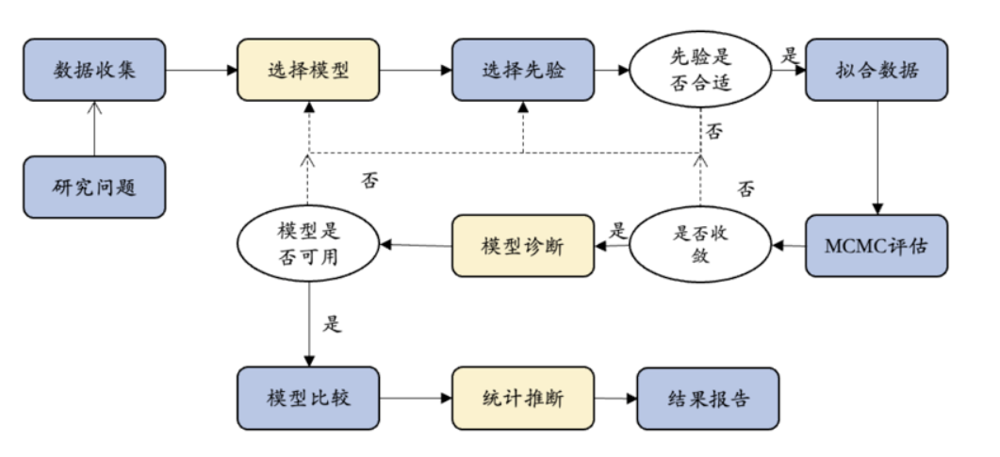
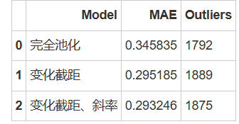
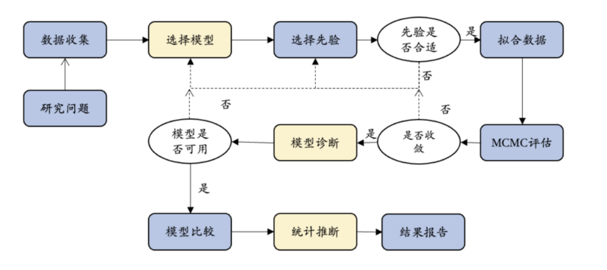

课程回顾与复习#
频率vs.概率#
频率与概率是统计学中的两个核心概念，它们之间既有区别也有联系。
频率的定义
频率是指在一定次数的实验中，某个事件发生的次数与实验总次数的比值。它基于实际观测数据，是实验结果的直接体现。
概率的定义
概率则是对某个事件发生可能性的度量。它可以是基于理论计算，也可以是基于主观判断。
二者的区别
频率是基于实验数据，而概率是基于理论或主观判断。
频率随着实验次数的增加而趋于稳定，而概率是一个固定的值。
二者的联系
在大量重复实验的情况下，频率可以作为概率的估计值。
概率论中的大数定律表明，当实验次数足够多时，频率将趋近于概率的真实值。
条件概率和贝叶斯公式#
从条件概率开始，这个概念描述了一个事件在另一个事件已经发生的情况下发生的概率。
条件概率可以通过面积的形式来理解，设事件 A 和 B 在概率空间中的交集为\((A\cap B)\)。
条件概率公式为：
\((A\cap B)\)可以表示为：
该公式表明，无论从事件 A 出发还是从事件 B 出发，它们的交集概率是一样的。
频率学派认为确定的值，讨论概率的分布没有意义。虽然没有上帝视角，还不知道具体的概率值，但相信概率就是确定的。
贝叶斯学派则认为任何一个未知量都可以看作是随机的，应该用一个概率分布去描述未知参数，而不是频率派认为的固定值。
在条件概率的基础上，通过重组公式，可以得到贝叶斯公式：

贝叶斯公式描述的是，给定事件 B 已经发生的情况下，事件 A 的发生概率如何调整。
我们结合先验知识\(P(A)\)和观测数据\(P(B|A)\)，从而得到更新后的概率\(P(A|B)\)。
这正是贝叶斯推断的核心思想：在新数据的条件下，更新我们的信念。
以及贝叶斯推断的特点：（不同的）先验与（不同的）数据之间平衡、序列性等。
PPL 与 MCMC#
在贝叶斯统计中，其分析的关键是结合先验与似然以确定后验分布。它可以告诉哪个参数值最大化了观察到已观察过的特定数据的概率，并把先验信念考虑在内。
后验分布它可以给出每个参数值的可能性分布，但是很难得到完整的分布，也无法解析地求解，这时候就需要采用MCMC方法解决这一问题。
MCMC通过在概率空间中随机采样以近似兴趣参数的后验分布，以近似感兴趣的参数的后验分布，因此允许在无法直接计算的情况下评估后验分布的形状。
在第六课中对MCMC进行了介绍，其核心思想为：
构建一个符合目标分布的马尔可夫链：
每次新样本的生成依赖于前一个状态，逐步逼近目标分布。
长时间采样达到平稳分布：
当马尔可夫链达到稳态分布时，采样结果便可以作为目标分布的近似。
尽管 MCMC 的实现方式多种多样，但所有方法的目标都是构建一个符合目标后验分布的马尔可夫链。许多 MCMC 算法，如 吉布斯采样、差分进化算法 以及 PyMC 默认使用的 NUTS（No-U-Turn Sampler），都是 Metropolis-Hastings 算法的变种。
在第七课中，介绍了PyMC作为概率编程语言（PPL，probabilistic programming language）框架的代表之一。不同的PPL框架（如Stan）在设计和功能上各有特色，适用于不同的应用场景和需求。
目前，可以通过Python中的PyMC、Bambi等包实现MCMC算法，从而在Python中进行贝叶斯模型的构建和后验推断。
Bayesian Workflow#
贝叶斯分析框架的最大优势在于其提供的灵活性，这使得研究者能够根据具体的研究背景和需求构建模型。然而，这种灵活性也带来了复杂性，要求研究者具备较高的统计技能和理解力。
模型设定
模型设定允许研究者将研究假设直接整合到模型结构中。这种整合有助于更准确地反映研究问题和理论框架。
整合先验知识
模型先验的设定为研究者提供了一个平台，用以整合先验知识或信念。这些先验信息可以在数据稀缺时提供重要的补充信息。
MCMC方法的应用
由于基于假设和机制的贝叶斯模型，尤其是分层模型的复杂性，常常需要采用马尔可夫链蒙特卡罗（MCMC）方法来进行参数估计。这一过程要求对模型进行细致的诊断，以确保估计的准确性和可靠性。
模型评估
模型评估是贝叶斯工作流程中的一个关键步骤，它确保模型能够合理地解释数据。这包括检查模型拟合度、预测能力和假设的合理性。
模型比较
模型比较环节允许研究者通过比较不同的研究假设，来确定哪个假设对数据的解释力最强。这种方法有助于筛选出最优模型。
统计推断
研究者可以利用贝叶斯统计推断来得出结论。这包括分析后验分布以获取参数估计的不确定性，以及使用贝叶斯因子来进行假设检验和模型选择。

演示如何将贝叶斯统计应用到真实研究中？#
在真实的研究中，对于研究者而言，在确定一个可行的研究问题后，应用贝叶斯方法进行数据分析时，重点需要考虑的步骤为模型设定、模型评估及统计推断。
接下来，依旧以本学期课上经常使用到的随机点运动范式为例，通过完整的研究报告形式对贝叶斯工作流程进行回顾和阐述。
研究问题#
首先，研究者需要从实际数据出发，明确研究问题并理解数据的特征。这包括数据的收集、预处理和探索性分析，以便为后续的建模提供基础。
例如，现在想知道在“随机点运动范式中，反应时间如何受到随机点运动方向一致性比例的影响，如果会的话，其影响程度是怎么样的？”
数据收集#
通常情况下，为解决上述问题，需要进行数据收集：
1.参与者被要求对一系列随机运动的点进行反应，记录每次反应所需的时间（反应时间）。
2.随机点运动方向的一致性比例（例如，80%的点朝同一方向，20%的点随机方向）作为自变量。
为方便演示，依旧采用Evans et al.（2020, Exp. 1） 的数据为例进行探索，并对其实验1的数据集进行描述。
Evans, N. J., Hawkins, G. E., & Brown, S. D. (2020). The role of passing time in decision-making. Journal of Experimental Psychology: Learning, Memory, and Cognition, 46(2), 316–326. https://doi.org/10.1037/xlm0000725
数据集描述#
Evans数据集包括12个变量，包括被试编号（subject）、反应时间、随机点运动方向的一致性（percentCoherence）等。
参与者
被试为在校本科生，一共有63人在线完成了实验，实验通过Javascript代码完成，在开始数据收集之前，为随机点运动范式设定了一个排除标准，及决策正确率为60%，低于这一标准的被试将不被视为正确完成任务。数据收集完成之后，低于这一标准的被试都被剔除，最终有6名被试的数据被剔除。
因此，最终纳入分析的被试数量一共为57人。
关于贝叶斯分析方法指南可参考：
Kruschke, J.K. Bayesian Analysis Reporting Guidelines. Nat Hum Behav 5, 1282–1291 (2021). https://doi.org/10.1038/s41562-021-01177-7
# 导入 pymc 模型包，和 arviz 等分析工具
import pymc as pm
import arviz as az
import seaborn as sns
import scipy.stats as st
import numpy as np
import matplotlib.pyplot as plt
import xarray as xr
import pandas as pd
import ipywidgets
import bambi as bmb
# 忽略不必要的警告
import warnings
warnings.filterwarnings("ignore")
# 使用 pandas 导入示例数据
try:
df_raw = pd.read_csv("/home/mw/input/bayes3797/evans2020JExpPsycholLearn_exp1_full_data.csv")
except:
df_raw = pd.read_csv('data/evans2020JExpPsycholLearn_exp1_full_data.csv')
# 筛选出特定被试并创建索引
df = df_raw.query("percentCoherence in [5, 10]").copy()
df["Coherence"] = np.where(df["percentCoherence"] == 5, 0, 1)
# 为每个被试建立索引 'subj_id' 和 'obs_id'
df['subj_id'] = df['subject']
df['obs_id'] = df.groupby('subject').cumcount() + 1
# 对反应时间取对数
df["log_RTs"] = np.log(df["RT"])
# 为每一行生成全局唯一编号 'global_id'
df['global_id'] = range(len(df))
df.head()
模型设定#
建立三个不同的模型来探讨反应时间与一致性比例之间的关系。
模型1：完全池化模型
目的：不考虑随机点运动方向一致性的比例对反应时间的影响
模型2：部分池化模型（变化截距）
目的：随机点运动方向的一致性与反应时间之间的关系在被试内有什么不同
模型3：部分池化模型（变化斜率和截距）
目的：考虑截距和斜率共同变化的情况，并全局参数进行定义
## 模型1：完全池化模型
complete_pooled_model = bmb.Model("log_RTs ~ 1 + Coherence", df)
## 模型2：随机截距模型
var_inter_model = bmb.Model("log_RTs ~ 1 + Coherence + (1|subj_id)", df)
# 模型3：随机截距和斜率模型
var_both_model = bmb.Model("log_RTs ~ Coherence + (Coherence|subj_id)",df)
拟合数据及MCMC评估#
接下来会对3个模型进行数据拟合、MCMC评估及后验计算。
模型1：完全池化模型
complete_pooled_trace = complete_pooled_model.fit(idata_kwargs={"log_likelihood": True})
complete_pooled_para = az.summary(complete_pooled_trace)
complete_pooled_para
模型2：部分池化模型（变化截距）
var_inter_trace = var_inter_model.fit(idata_kwargs={"log_likelihood": True})
var_inter_para = az.summary(var_inter_trace)
var_inter_para
模型3：部分池化模型（变化截距和斜率）
var_both_trace = var_both_model.fit(idata_kwargs={"log_likelihood": True})
var_both_para = az.summary(var_both_trace)
var_both_para
模型比较#
模型评估指标
在分析模型的预测能力时，有绝对指标和相对指标，绝对指标用于衡量模型预测值与真实值之间的差异，相对指标用于比较不同模型的预测能力，通常用于不同方法或模型之间的性能对比。
绝对指标：
在之前的课程中介绍过对后验预测结果进行评估的两种方法
一是MAE，即后验预测值与真实值之间预测误差的中位数，二是within_95，即真实值是否落在95%后验预测区间内
在这里调用之前写过的计算两种指标的方法，评估两种分层模型的后验预测结果
相对指标
在实际操作中，我们通过 ArViz 的函数az.loo计算\(ELPD_{LOO-CV}\)
两大优势：
计算速度快，且结果稳健
提供了丰富的模型诊断指标
complete_pooled_model.predict(complete_pooled_trace, kind="pps")
var_inter_model.predict(var_inter_trace, kind="pps")
var_both_model.predict(var_both_trace, kind="pps")
# 定义计算 MAE 函数
from statistics import median
def MAE(trace):
# 计算每个X取值下对应的后验预测模型的均值
pre_x = trace.posterior_predictive["log_RTs"].stack(sample=("chain", "draw"))
pre_y_mean = pre_x.mean(axis=1).values
# 提取观测值Y，提取对应Y值下的后验预测模型的均值
MAE = pd.DataFrame({
"ppc_mean": pre_y_mean,
"original": trace.observed_data.log_RTs.values
})
# 计算预测误差
MAE["pre_error"] = abs(MAE["original"] -\
MAE["ppc_mean"])
# 最后，计算预测误差的中位数
MAE = median(MAE.pre_error)
return MAE
# 定义
def counter_outlier(model_trace, hdi_prob=0.95):
# 将az.summary生成的结果存到hdi_multi这个变量中，该变量为数据框
hdi = az.summary(model_trace.posterior_predictive, kind="stats", hdi_prob=hdi_prob)
lower = hdi.iloc[:,2].values
upper = hdi.iloc[:,3].values
# 将原数据中的自我控制分数合并，便于后续进行判断
y_obs = model_trace.observed_data["log_RTs"].values
# 判断原数据中的压力分数是否在后验预测的95%可信区间内，并计数
hdi["verify"] = (y_obs <= lower) | (y_obs >= upper)
hdi["y_obs"] = y_obs
hdi_num = sum(hdi["verify"])
return hdi_num
# 将每个模型的PPC储存为列表
ppc_samples_list = [complete_pooled_trace, var_inter_trace, var_both_trace]
model_names = ["完全池化", "变化截距", "变化截距、斜率"]
# 建立一个空列表来存储结果
results_list = []
# 遍历模型并计算MAE和超出95%hdi的值
for model_name, ppc_samples in zip(model_names, ppc_samples_list):
outliers = counter_outlier(ppc_samples)
MAEs = MAE(ppc_samples)
results_list.append({'Model': model_name, 'MAE':MAEs, 'Outliers': outliers})
# 从结果列表创建一个DataFrame
results_df = pd.DataFrame(results_list)
results_df

comparison_list = {
"model1(complete pooling)":complete_pooled_trace,
"model2(hierarchical intercept)":var_inter_trace,
"model3(hierarchy both)":var_both_trace,
}
az.compare(comparison_list)
complete_pooled_trace
通过 arviz.compare 方法来对比多个模型的 elpd。从下面结果可见：
模型3的 elpd_loo 最大，表明它对样本外数据的预测性能最好。
而模型1的 elpd_loo 最小，表明它的预测性能最差。
因此，根据模型评估的结果，可以发现模型3（变化截距和变化斜率）的结果在3个模型中是最好的。
贝叶斯统计推断#
模型比较发现，模型3（变化截距和变化斜率）的结果在3个模型中是最好的。最后，将使用 HDI + ROPE 和贝叶斯因子（Bayes Factor，BF）来进行统计推断。
HDI + ROPE 的统计推断#
反应时差异的后验分布平均值为 -281 ms，然而，这一数值并不足以断定实验条件对反应时间有显著的减少作用。
95% HDI 范围为 [-608 ms, 48 ms]，表明后验分布中95%的概率下的反应时差异位于此区间。由于95% HDI 包含了0，并且分布主要集中在负值方向，但这一趋势并不足以证明存在显著的效应。
ROPE 设定了一个 [-30 ms, 30 ms] 的实用等效区间，用以判断反应时差异是否具有实际意义。ROPE 内的概率仅为1.6%，尽管这表明在大多数情况下反应时差异超出了可忽略的范围，但这一差异仍不足以被视为显著。
贝叶斯因子（Bayes Factor，BF）#
反应时的差异（beta_1）在统计上和实际意义上均不显著。
数据强烈支持 无效假设（beta_1 = 0），即反应时差异可能不存在或非常微弱。
贝叶斯因子 BF_10 = 0.01 提供了明确的证据，表明 beta_1 不显著。
从后验分布来看，数据更新后 beta_1 的可能值仍然集中在 0 附近，进一步支持无效假设。
# 从贝叶斯模型的后验分布中提取参数
def inv_log(mu, sigma):
return np.exp(mu + (sigma ** 2) / 2)
Intercept_mu = var_both_trace.posterior.stack(sample=("chain", "draw")).get("Intercept")
Coherence_mu = var_both_trace.posterior.stack(sample=("chain", "draw")).get("Coherence")
Intercept_sigma = var_both_trace.posterior.stack(sample=("chain", "draw")).get("1|subj_id_sigma")
Coherence_sigma = var_both_trace.posterior.stack(sample=("chain", "draw")).get("Coherence|subj_id_sigma")
# 计算两个条件下的反应时间
rt_coh_5 = inv_log(Intercept_mu, Intercept_sigma)
rt_coh_10 = inv_log(Intercept_mu+Coherence_mu, Coherence_sigma)
rt_coh_5 = rt_coh_5[(rt_coh_5 >= 300) & (rt_coh_5 <= 1500)]
rt_coh_10 = rt_coh_10[(rt_coh_10 >= 300) & (rt_coh_10 <= 1500)]
rt_diff = rt_coh_10 - rt_coh_5
rt_diff = rt_diff.values
# 定义 ROPE 区间，根据研究的需要指定实际等效范围
rope_interval = [-30, 30]
# 绘制后验分布，显示 HDI 和 ROPE
az.plot_posterior(
{"RT Difference":rt_diff},
hdi_prob=0.95,
rope=rope_interval,
figsize=(8, 5),
textsize=12
)
plt.show()
# 进行贝叶斯因子计算，需要采样先验分布
var_both_trace.extend(var_both_model.prior_predictive(random_seed=84735) )
# 绘制贝叶斯因子图
az.plot_bf(var_both_trace, var_name="Coherence", ref_val=0)
# 设置 x 轴的范围
plt.xlim(-0.5, 0.5)
# 去除上框线和右框线
sns.despine()
结论
通过模型建立和模型比较，相比于模型1和模型2，模型3（变化截距和变化斜率）的效果最好。因此，在随机点运动范式中，反应时间显著受到随机点运动方向一致性比例的影响。
具体而言，模型3考虑了变化截距和变化斜率，这意味着它不仅捕捉到了不同条件下反应时间的平均差异，还考虑了这些差异随条件变化的趋势。相比之下，模型1和模型2未能充分捕捉到这些复杂的变化模式，因而在预测精度和模型拟合度上表现不如模型3。
总结#
贝叶斯统计的核心思想包括先验分布、后验分布、贝叶斯推断和模型比较等内容，在学习了基础理论之后，重点探讨了如何在实际研究中应用贝叶斯统计方法，并使用PyMC等工具进行模型构建和分析。

贝叶斯统计的基本原理：理解先验分布、似然函数和后验分布的关系。
贝叶斯推断：学习如何通过贝叶斯方法进行参数估计和假设检验。
模型比较：掌握使用贝叶斯因子和其他指标进行模型比较的方法。
实际应用：通过实际案例，演示如何使用PyMC进行贝叶斯模型的构建、拟合和诊断。